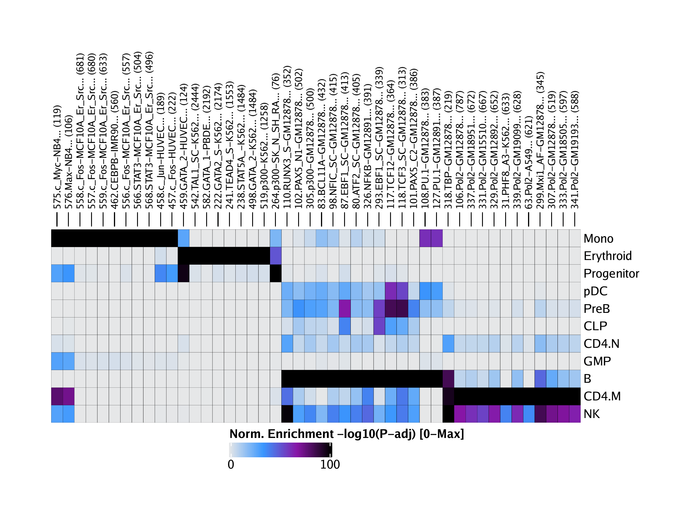
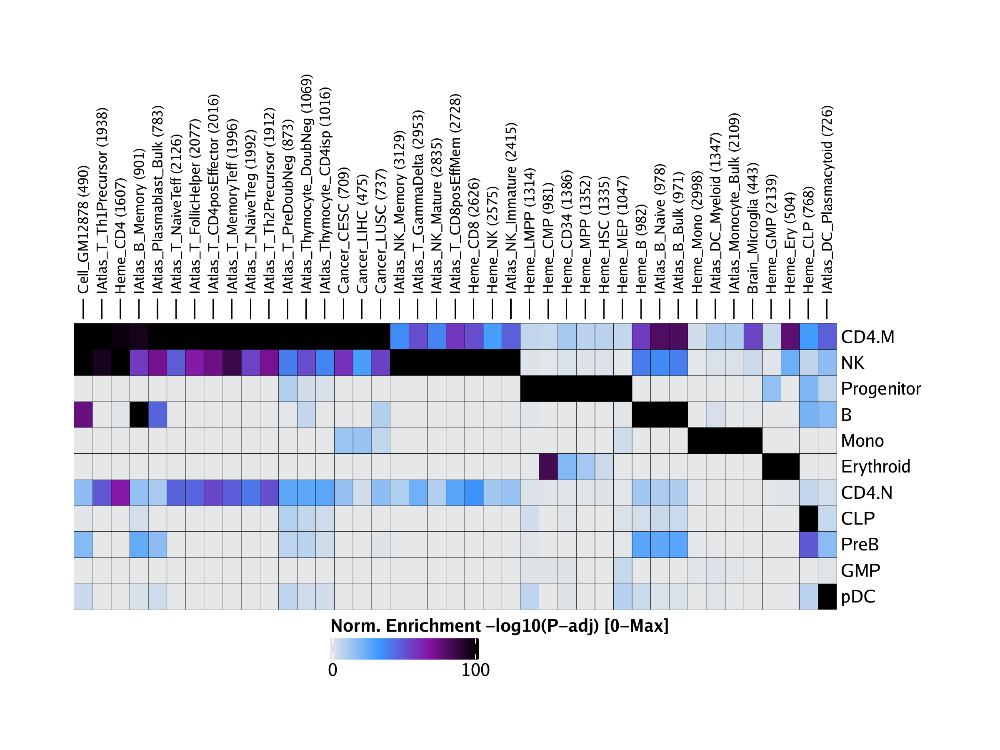
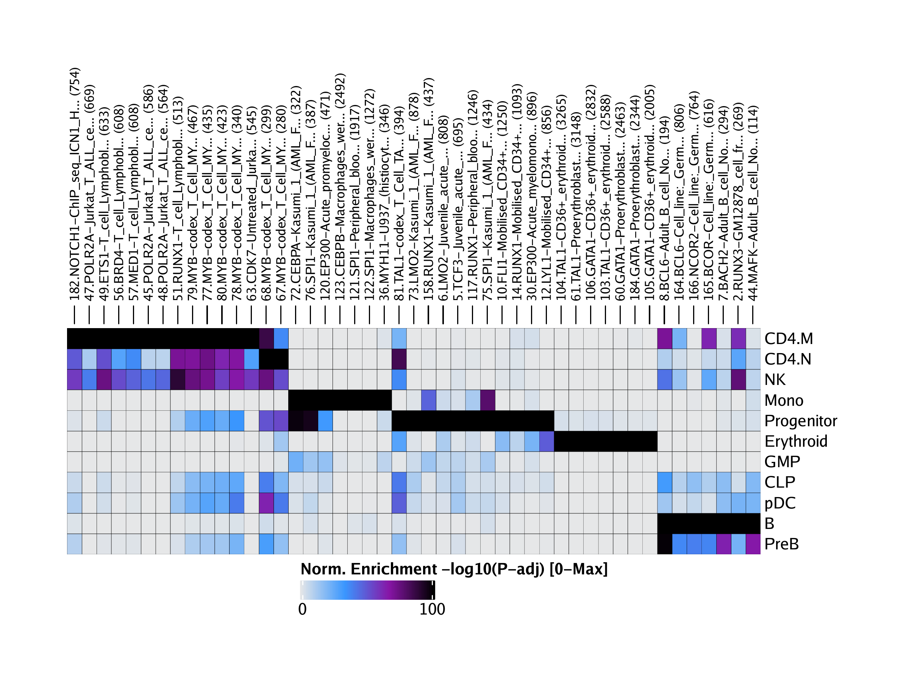

12.3 ArchR Enrichment
In addition to testing peaks for enrichment of motifs, ArchR also enables the determination of more customizable enrichments. To facilitate this level of data exploration, we have curated a few different feature sets that can be easily tested for enrichment in your peak regions of interest. We describe each of those curated feature sets below. This type of analysis was originally inspired by LOLA.
12.3.1 Encode TF Binding Sites
The ENCODE consortium has mapped TF binding sites (TFBSs) across a wide array of cell types and factors. We can use these TFBS collections to better understand our clusters. For example, in the context of truly unknown cell types, these enrichments could help to elucidate cell identity. To enable analyses with these ENCODE TFBS feature sets, we simply call the addArchRAnnotations() function with collection = "EncodeTFBS". Similar to what happens when using addPeakAnnotations(), this creates a binarized representation of the overlap between all marker peaks and all ENCODE TFBS.
## Annotation ArchR-Hg19-v1.Anno does not exist! Downloading..
## Annotating Chr: 1 2 3 4 5 6 7 8 9 10 11 12 13 14 15 16 17 18 19 20 21 22 X
We can then test for enrichment of these ENCODE TFBSs with our peak set using the peakAnnoEnrichment() function.
enrichEncode <- peakAnnoEnrichment(
seMarker = markersPeaks,
ArchRProj = projHeme5,
peakAnnotation = "EncodeTFBS",
cutOff = "FDR <= 0.1 & Log2FC >= 0.5"
)## 2020-04-15 10:43:34 : Computing Enrichments 1 of 11, 0.036 mins elapsed.
## 2020-04-15 10:43:34 : Computing Enrichments 2 of 11, 0.041 mins elapsed.
## 2020-04-15 10:43:34 : Computing Enrichments 3 of 11, 0.047 mins elapsed.
## 2020-04-15 10:43:35 : Computing Enrichments 4 of 11, 0.054 mins elapsed.
## 2020-04-15 10:43:35 : Computing Enrichments 5 of 11, 0.063 mins elapsed.
## 2020-04-15 10:43:36 : Computing Enrichments 6 of 11, 0.066 mins elapsed.
## 2020-04-15 10:43:36 : Computing Enrichments 7 of 11, 0.071 mins elapsed.
## 2020-04-15 10:43:36 : Computing Enrichments 8 of 11, 0.075 mins elapsed.
## 2020-04-15 10:43:36 : Computing Enrichments 9 of 11, 0.079 mins elapsed.
## 2020-04-15 10:43:37 : Computing Enrichments 10 of 11, 0.083 mins elapsed.
## 2020-04-15 10:43:37 : Computing Enrichments 11 of 11, 0.087 mins elapsed.
As previously, this function returns a SummarizedExperiment object.
## class: SummarizedExperiment
## dim: 689 11
## metadata(0):
## assays(10): mlog10Padj mlog10p … CompareFrequency feature
## rownames(689): 1.CTCF-Dnd41… 2.EZH2_39-Dnd41… …
## 688.CTCF-WERI_Rb_1… 689.CTCF-WI_38…
## rowData names(0):
## colnames(11): B CD4.M … PreB Progenitor
## colData names(0):
We can create a heatmap from these enrichment results using the plotEnrichHeatmap() function.
## Adding Annotations..
## Preparing Main Heatmap..
And then plot this heatmap using ComplexHeatmap::draw().

To save an editable vectorized version of this plot, we use the plotPDF() function.
plotPDF(heatmapEncode, name = "EncodeTFBS-Enriched-Marker-Heatmap", width = 8, height = 6, ArchRProj = projHeme5, addDOC = FALSE)## [1] 0
12.3.2 Bulk ATAC-seq
Similar to the curated set of ENCODE TF binding sites, we have also curated peak calls from bulk ATAC-seq experiments that can be used for overlap enrichment testing. We access these bulk ATAC-seq peak sets by setting collection = "ATAC".
## Annotating Chr: 1 2 3 4 5 6 7 8 9 10 11 12 13 14 15 16 17 18 19 20 21 22 X
We then test our marker peaks for enrichment of these bulk ATAC-seq peaks by setting peakAnnotation = "ATAC".
enrichATAC <- peakAnnoEnrichment(
seMarker = markersPeaks,
ArchRProj = projHeme5,
peakAnnotation = "ATAC",
cutOff = "FDR <= 0.1 & Log2FC >= 0.5"
)## 2020-04-15 10:43:53 : Computing Enrichments 1 of 11, 0.027 mins elapsed.
## 2020-04-15 10:43:54 : Computing Enrichments 2 of 11, 0.028 mins elapsed.
## 2020-04-15 10:43:54 : Computing Enrichments 3 of 11, 0.03 mins elapsed.
## 2020-04-15 10:43:54 : Computing Enrichments 4 of 11, 0.034 mins elapsed.
## 2020-04-15 10:43:54 : Computing Enrichments 5 of 11, 0.036 mins elapsed.
## 2020-04-15 10:43:54 : Computing Enrichments 6 of 11, 0.038 mins elapsed.
## 2020-04-15 10:43:54 : Computing Enrichments 7 of 11, 0.04 mins elapsed.
## 2020-04-15 10:43:54 : Computing Enrichments 8 of 11, 0.043 mins elapsed.
## 2020-04-15 10:43:55 : Computing Enrichments 9 of 11, 0.045 mins elapsed.
## 2020-04-15 10:43:55 : Computing Enrichments 10 of 11, 0.047 mins elapsed.
## 2020-04-15 10:43:55 : Computing Enrichments 11 of 11, 0.049 mins elapsed.
As before, the output of this is a SummarizedExperiment object with information on the enrichment results.
## class: SummarizedExperiment
## dim: 96 11
## metadata(0):
## assays(10): mlog10Padj mlog10p … CompareFrequency feature
## rownames(96): Brain_Astrocytes Brain_Excitatory_neurons … Heme_MPP
## Heme_NK
## rowData names(0):
## colnames(11): B CD4.M … PreB Progenitor
## colData names(0):
We can create an enrichment heatmap from this SummarizedExperiment using plotEnrichHeatmap().
## Adding Annotations..
## Preparing Main Heatmap..
And plot this heatmap using ComplexHeatmap::draw()

To save an editable vectorized version of this plot, we use the plotPDF() function.
plotPDF(heatmapATAC, name = "ATAC-Enriched-Marker-Heatmap", width = 8, height = 6, ArchRProj = projHeme5, addDOC = FALSE)## [1] 0
12.3.3 Codex TFBS
The same type of analyses can be performed for CODEX TFBSs by setting collection = "Codex".
## Annotating Chr: 1 2 3 4 5 6 7 8 9 10 11 12 13 14 15 16 17 18 19 20 21 22 X
enrichCodex <- peakAnnoEnrichment(
seMarker = markersPeaks,
ArchRProj = projHeme5,
peakAnnotation = "Codex",
cutOff = "FDR <= 0.1 & Log2FC >= 0.5"
)## 2020-04-15 10:44:11 : Computing Enrichments 1 of 11, 0.025 mins elapsed.
## 2020-04-15 10:44:11 : Computing Enrichments 2 of 11, 0.027 mins elapsed.
## 2020-04-15 10:44:11 : Computing Enrichments 3 of 11, 0.029 mins elapsed.
## 2020-04-15 10:44:11 : Computing Enrichments 4 of 11, 0.032 mins elapsed.
## 2020-04-15 10:44:11 : Computing Enrichments 5 of 11, 0.034 mins elapsed.
## 2020-04-15 10:44:11 : Computing Enrichments 6 of 11, 0.035 mins elapsed.
## 2020-04-15 10:44:11 : Computing Enrichments 7 of 11, 0.036 mins elapsed.
## 2020-04-15 10:44:11 : Computing Enrichments 8 of 11, 0.037 mins elapsed.
## 2020-04-15 10:44:11 : Computing Enrichments 9 of 11, 0.038 mins elapsed.
## 2020-04-15 10:44:11 : Computing Enrichments 10 of 11, 0.039 mins elapsed.
## 2020-04-15 10:44:12 : Computing Enrichments 11 of 11, 0.041 mins elapsed.
## class: SummarizedExperiment
## dim: 189 11
## metadata(0):
## assays(10): mlog10Padj mlog10p … CompareFrequency feature
## rownames(189): 1.STAT5-No_drug_(DMSO)… 2.RUNX3-GM12878_cell_fr… …
## 188.TP53-codex_Embryonic… 189.TP53-codex_Embryonic…
## rowData names(0):
## colnames(11): B CD4.M … PreB Progenitor
## colData names(0):
## Adding Annotations..
## Preparing Main Heatmap..

We can then plot this
plotPDF(heatmapCodex, name = "Codex-Enriched-Marker-Heatmap", width = 8, height = 6, ArchRProj = projHeme5, addDOC = FALSE)## [1] 0